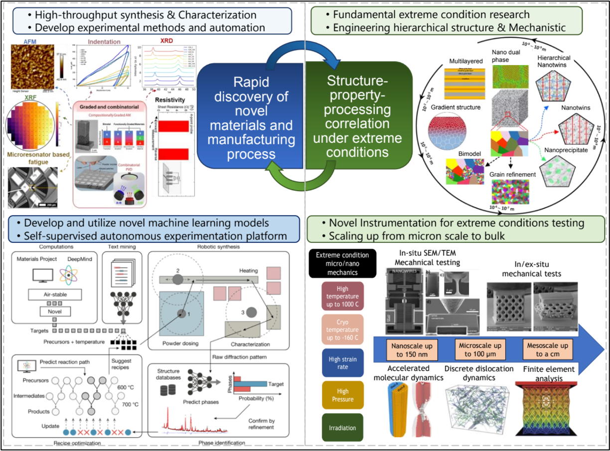

Welcome to the MICRON Lab
Materials Innovation through Custom Routes and Optimized Nanoscale-design
Department of Materials and Metallurgical Engineering
New Mexico Institute of Mining and Technology

Designing at the micro-scale. Manufacturing for the future. Building for the extreme.
The MICRON Laboratory (Materials Innovation through Custom Routes and Optimized Nanoscale-design) at New Mexico Institute of Mining and Technology focuses on rapid discovery of novel materials and understanding structure-property-processing correlations under extreme conditions. Our research aims to develop hierarchical materials with enhanced properties through multi-scale engineering, advanced manufacturing including additive and thin film deposition, and in-situ SEM/TEM mechanical testing. We bridge fundamental materials science with practical engineering solutions for next-generation applications in demanding environments.
Featured News
Dr. Jain selected for 2027 TMS Light Metals Division award
The Light Metals Division of The Minerals, Metals & Materials Society (TMS) selected Dr. Manish Jain for its 2027 Early Career Leaders Professional Development Award.
Nipuni De Silva wins Best Poster Award
Nipuni De Silva received the Best Poster Award at the 2026 NM-INBRE conference.
Nipuni De Silva passes her Ph.D. candidacy exam
Congratulations to Nipuni on passing her doctoral candidacy exam in Materials Engineering at New Mexico Tech.
NM-INBRE Research Fellowship
Dr. Jain received a summer 2026 research fellowship through NM-INBRE.
TMS representative at the 2026 ELA conference
Dr. Jain represented TMS at the 2026 Emerging Leaders Alliance Conference in Pittsburgh.
Latest Publications
Recent papers from our group.
- Stabilizing nanocrystalline-nanotwinned Cu-Ag for exceptional fatigue resistance Advanced Materials, accepted (2026)
- High-throughput characterization of combinatorial Pt-Ni films reveals multi-functional designs and a path to upscaling exemplars Surface and Coatings Technology, 133935 (2026)
- Novel Materials Discovery via High-Throughput Automated Tribological Testing of Thin Films Tribology Letters 74, 77 (2026)
- Elucidating the origins of grain growth in the high cycle fatigue degradation of Au thin films Acta Materialia 313, 122301 (2026)
- Energy dissipation of metallic microlattices under extreme thermomechanical environments Acta Materialia 310, 122131 (2026)